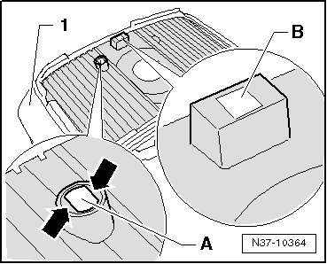
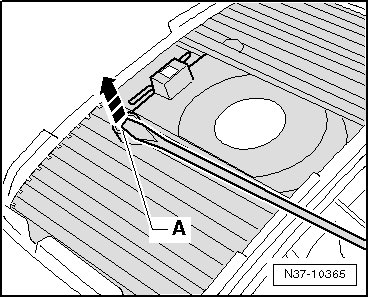
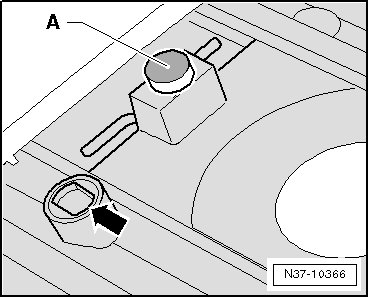

Tiptronic Switch Signal Magnet
Tiptronic Switch Signal Magnet
Two signal magnets - A - and - B - are installed in the cover strips - 1 -. These magnets transfer selector lever position signals to the circuit board above.

CAUTION!
When installing, the magnet - A - may stick to metallic objects (tools, for example). If it does, it must be reinserted in the correct position.
A magnet that is installed incorrectly or is missing leads to shift mechanism malfunctions.
- When installing a new cover strip, check to make sure the magnet - A - is present and is installed correctly.
Replace the cover strip if the magnet is lost.
Magnet Installation Location, Checking
- Remove the magnet - A - from the cover strip, e.g. with a screwdriver.

- Remove the magnet from the screwdriver and place it permanently on the installed magnet.

When positioning it, the magnet - A - rotates by itself into the correct installation position and is attracted by the permanently installed magnet.
- Now mark the side of the magnet that faces up - A -, e.g. with a felt tip pen.
- Insert the magnet into the cover strip - arrow - with the marked side up.
- After inserting, ensure the retaining edges - arrows - lie on the magnet.